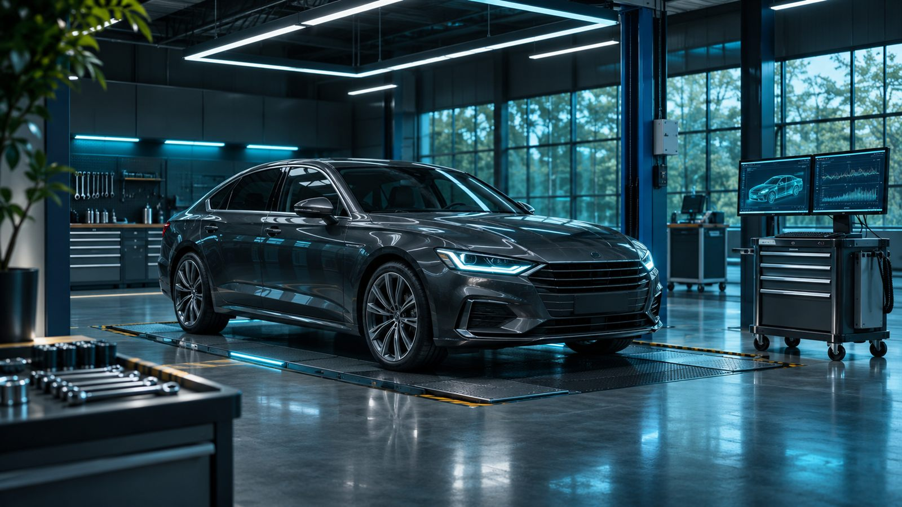
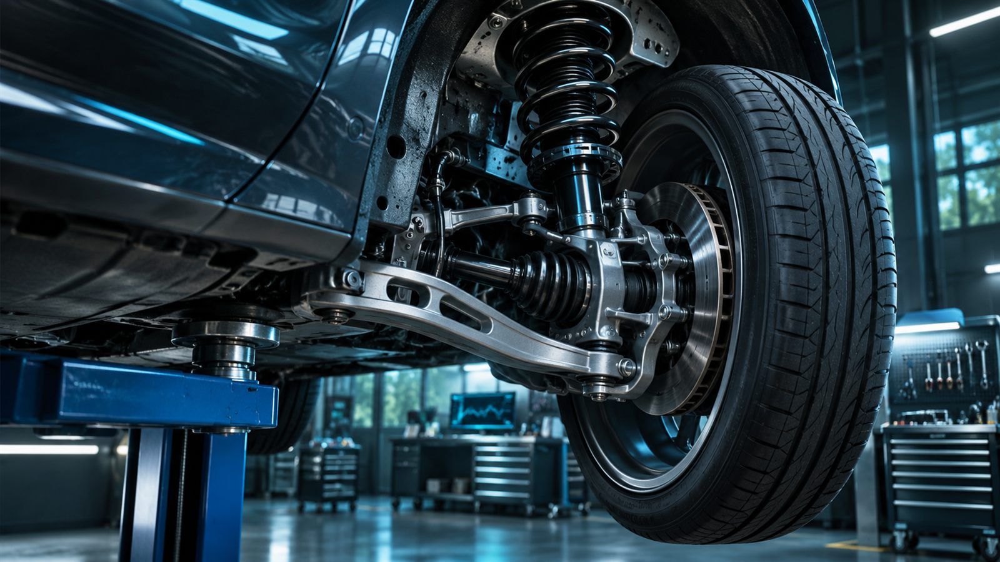
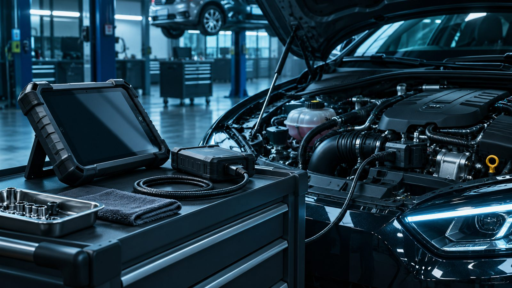

Осмотр, люфты и состояние соединений.

Выберите узел для проверки.
Диагностика и ремонт автомобиля с понятным составом работ.
Проверяем системуДвигательПоказания условные
Нестабильные обороты?
Начнём с поиска причины.
Ремонт согласуем после проверки.
СимптомПроверкаРешение

Лист диагностикиСначала факт.
Сначала факт.
Потом замена.
Обращение владельца
Стук на неровностях
Отмечаем, когда появляется звук и что меняется при движении.
Составляем перечень найденных дефектов.
Результат проверкиДефектовка и состав работ
Стоимость ремонта и деталей согласуется до начала ремонта.
Вы видите, что согласуете
РаботаЧто меняем, регулируем или проверяем.
ДетальАртикул, совместимость и поставщик.
СтоимостьРаботы и материалы отдельными строками.
С какой проверки начать
Выберите объём диагностики. Ремонт и запчасти оплачиваются отдельно.
Выбранная диагностика
Пример — концепт для портфолио

Расскажите о симптоме.
Возьмите историю работ.
Вспомните, когда появилась проблема, что ей предшествовало и какие работы уже проводились. Подготовьте документы на автомобиль и сведения об установленных деталях.
Перед тем
как начать
Можно приехать со своими запчастями?
Это обсуждается при записи. Совместимость и условия гарантии на работу уточняют до установки.
Нужно ли сразу соглашаться на ремонт?
Нет. После проверки мастер должен объяснить найденную причину, состав работ и стоимость. Решение остаётся за владельцем.
Можно ли ехать с горящей лампой неисправности?
Без описания симптомов нельзя оценить безопасность движения. При сомнениях остановитесь в безопасном месте и обратитесь в сервис или службу эвакуации.
Сначала выясним причину
Опишите симптом при разговоре с мастером. Замена деталей — после согласования.
Форма показывает сценарий заявки. Данные не отправляются и не сохраняются.